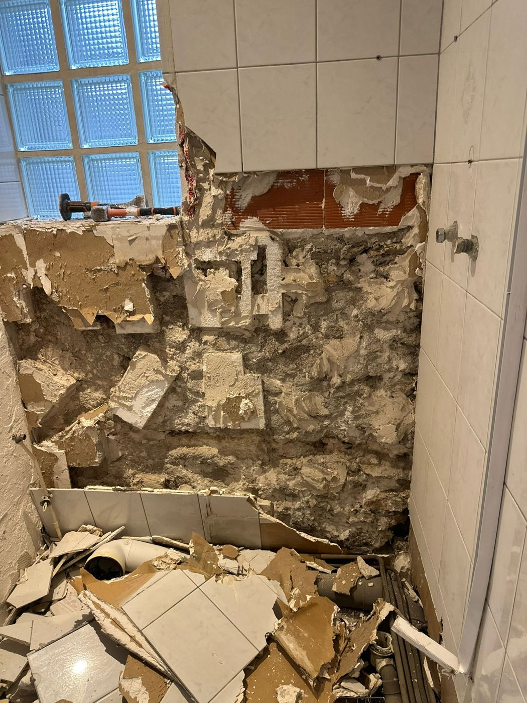
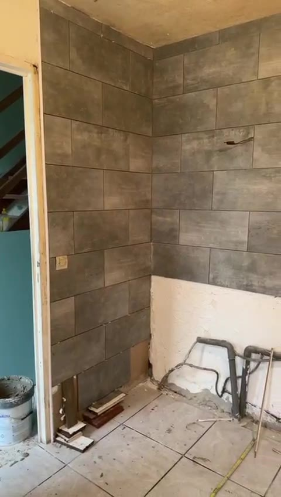
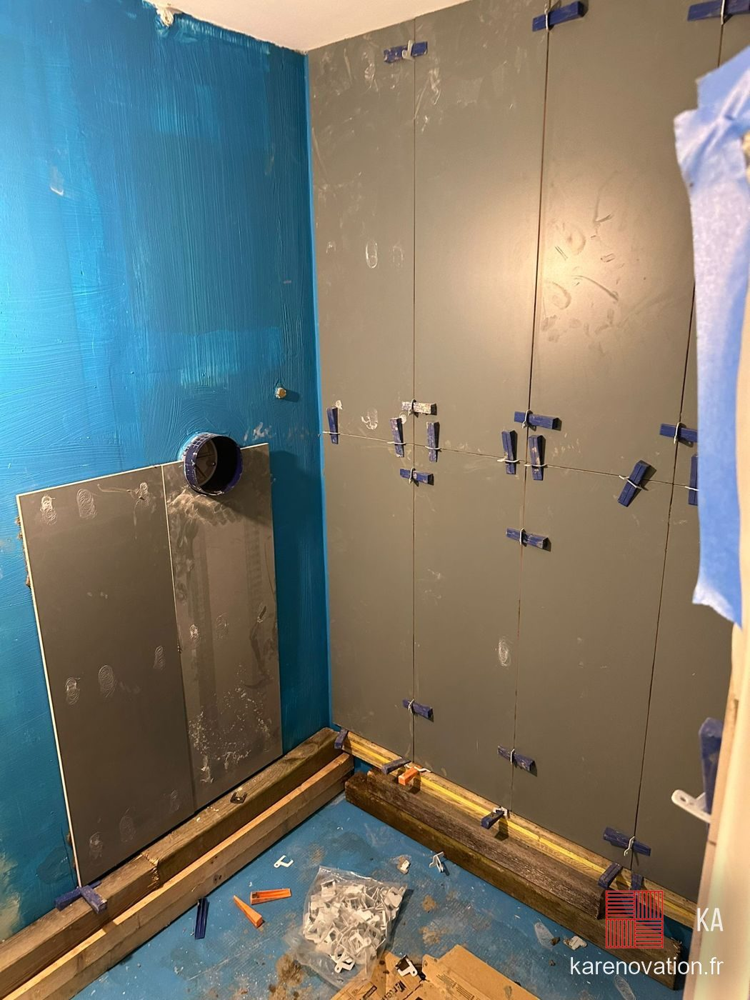

Accueil · Qui suis-je
Qui suis-je · artisan tous corps d'étatKarim Ainseba, votre artisan salle de bain
Je m’appelle Karim, je suis artisan à Chanteloup-les-Vignes et j’ai créé KA Rénovation pour me consacrer à ce que j’aime : rénover des salles de bain et faire du travail soigné.
Mon parcours
J’ai toujours aimé travailler de mes mains, et je suis dans les travaux depuis 2019. Au fil des chantiers, j’ai appris plusieurs métiers : plomberie, électricité, carrelage, placo et peinture.
Je me suis finalement spécialisé dans la salle de bain, une pièce où chaque détail compte et où le travail bien fait fait toute la différence.
Un artisan, du début à la fin
Douche à l’italienne, remplacement de baignoire, rénovation complète ou installation de WC suspendus : je m’occupe de votre projet de A à Z.
En faisant appel à moi, vous avez un seul interlocuteur. C’est moi qui viens chez vous, prépare le devis et réalise les travaux. Pas d’intermédiaires, vous savez directement à qui vous adresser.
Et quand il faut être deux pour certaines étapes du chantier, je fais équipe avec d’autres artisans indépendants, et votre devis ne change pas.
Un prix juste, sans frais inutiles
Contrairement à une grosse entreprise, je n’ai pas de commerciaux ni de grands bureaux à financer. Avec moins de frais de structure, je peux vous proposer un tarif adapté à votre projet, tout en restant exigeant sur la qualité du travail.
Mon objectif est simple : faire les choses correctement, respecter votre budget et vous laisser une salle de bain dont vous serez satisfait.
Comment je travaille
Je me déplace pour voir votre salle de bain avant d’établir le devis. Cela me permet de bien comprendre vos besoins.
Sur place, j’analyse l’état du sol, des murs, de la plomberie et de l’électricité, pour vous dire ce qui est faisable. Je vous aide aussi dans vos choix de carrelage, de meubles et de robinetterie, puis je vous tiens informé tout au long du chantier.
Avec KA Rénovation, vous faites appel directement à l’artisan qui réalise vos travaux, avec un contact simple et un prix sans intermédiaires.
Karim Ainseba
KA Rénovation · Chanteloup-les-Vignes



Questions fréquentes
Qui vient voir ma salle de bain ?
Moi, Karim. Je viens voir la pièce, je fais le devis, et je suis le chantier jusqu'au bout.
Un artisan peut-il faire tout seul une salle de bain ?
Oui, c’est tout le principe d’un artisan tous corps d’état : je connais tous les métiers d’une salle de bain, démolition, plomberie, électricité, placo, étanchéité et carrelage. Et c’est ma passion. La preuve en photos dans mes réalisations.
Vous faites seulement les salles de bain ?
Non. La salle de bain est ma spécialité, mais j'ai les compétences pour toute la maison : plomberie, électricité, placo et cloisons, faux plafond, isolation intérieure, carrelage, peinture, sol PVC et portes intérieures. Parlez-moi de votre projet.
Où intervenez-vous ?
Depuis Chanteloup-les-Vignes, dans les Yvelines, et dans toute l'Île-de-France.
Devis gratuit après visite sur place. Envoyez-nous quelques photos de votre pièce pour une première estimation, puis nous fixons ensemble un rendez-vous.
Envoyer mes photos Appeler le 07 63 14 76 27Nos autres prestations
Nos conseils
Nous intervenons dans toute l'Île-de-France
Parlons de
votre salle de bain.
Envoyez-nous des photos de votre pièce pour une première estimation, puis on fixe ensemble un rendez-vous pour le devis sur place.
07 63 14 76 27Fermé le dimanche
depuis Chanteloup-les-Vignes (78)